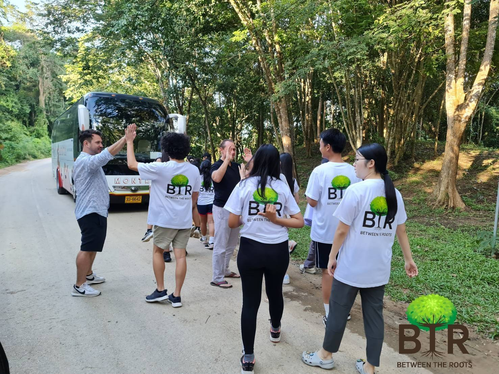
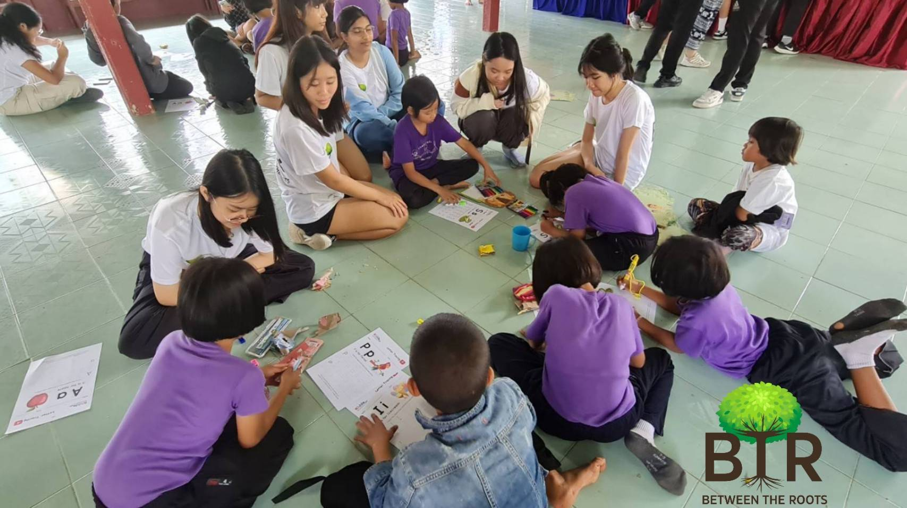
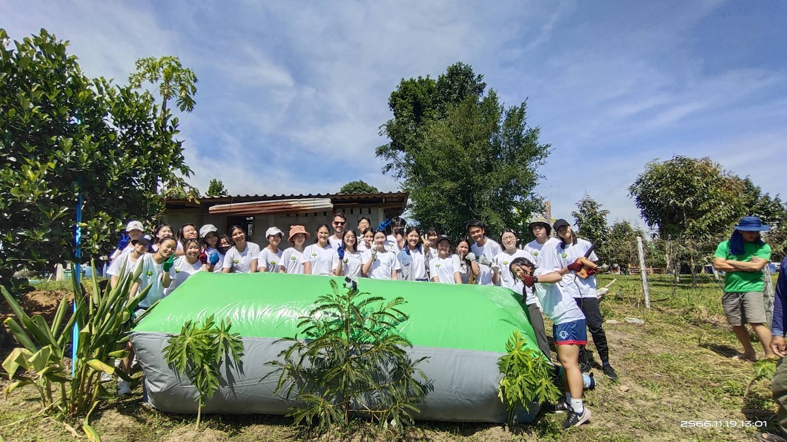
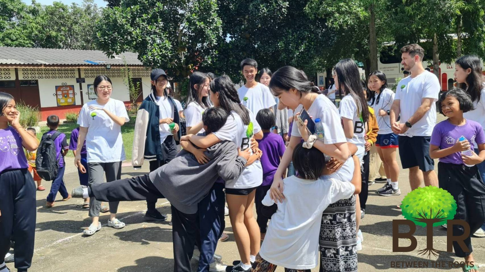
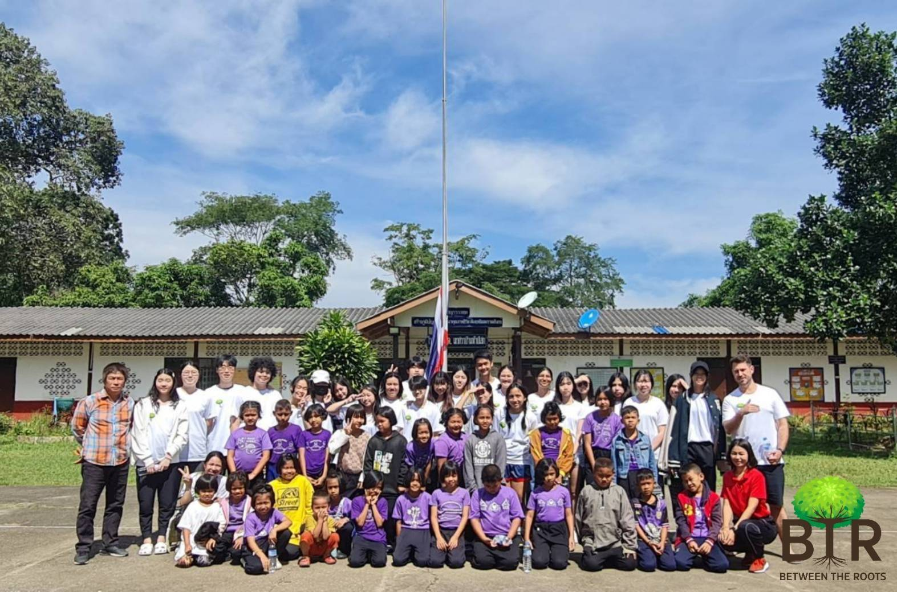

An Hour of Labor for Ten Years of Energy
“One hour of your work today just provided ten years worth of renewable energy for this household!” - a heartwarming message from Mr Koson Saengthong, village chief of Pa Deng Village in Phetchaburi, Thailand, which was Between The Roots’ destination this past November.
A group of 26 volunteers from BTR went to Phetchaburi for their first ever community outreach trip which spanned over two days and followed a period of fundraising. BTR fundraised around 12,000 THB to fund a biogas balloon for a Pa Deng villager, as well as educational material and lunches for children at the Naresuan Ban Huasook Border Patrol Police School.

The group’s first activity was providing educational material (which BTR produced over the course of about two months) to rural Thai children at the aforementioned school. BTR had lots of fun with the kids, and the kids were very enthusiastic in the lessons, and they loved hanging out with the large group. In fact, by the end of the two hour session with the children, they kept holding onto the members of BTR and would not let them leave, so BTR promised to return someday to hang out with the children again.

This activity was followed by a ten minute truck ride to a Pa Deng villager’s house, which was awaiting the installation of a biogas balloon. A biogas balloon is a renewable energy source where organic waste undergoes a chemical reaction in order to produce an equivalent of LPG cooking gas for villagers, while producing fertilizer as a byproduct. The team worked tirelessly to dig, assemble, and install the biogas balloon, and succeeded in providing an environmentally conscious energy source to rural villagers, with the help of Mr Saengthong. The installation of just one biogas balloon reduced greenhouse gas emissions from organic waste, reduced the costs of buying LPG gas, and boosted agriculture by providing fertilizer.

Although the four hour trip into a national park area with no signal posed some challenges, the group adapted and still got an enriching experience, while still accomplishing all their goals in assisting the community.
Between The Roots has accomplished its first community outreach trip, and will continue to promote sustainability through advocacy and education, and assist society in any way they can.

Thank you to the 26 pioneers of BTR for their hard work, passion, and perseverance for and during this trip:
- Thanakorn (Gunn) Vajirakachorn
- Bandhita (Tonhom) Kaewkhong
- Thitilapa (Ivy) Sae-Heng
- Ananya Anuj Dharna
- Arissara (Bogey) Kunpuang
- Aueaungkul (Ridee) Pungkiatratsamee
- Benyapa (DJ) Thongduang
- Chane Jantarawaranyoo
- Dongkyu (Andy) Kim
- Ei Ei (Catherine) Aung
- Hnin Aein Dara (Kewa) Kyaw
- Jihun Lee
- Naryang (Amy) Kim
- Natprima (Wawa) Sae-Heng
- Pakamon (Deena) Kerdsomboon
- Paradis (Chloe) Lao
- Parisa Panupat
- Pattanan (Claire) Tang
- Pichayapa (Thank you) Nilpakdee
- Prae Sangvichien
- Rattanawalee (Walee) Limsomboon
- Risa (Lisa) Pienvichit
- Sasinipa (Julian) Nopakun
- Tyna MacPherson Sethaputra
- Venichaya (Nene) Tangchalermkul
- Yawadi (Dews) Piyavoraskul
